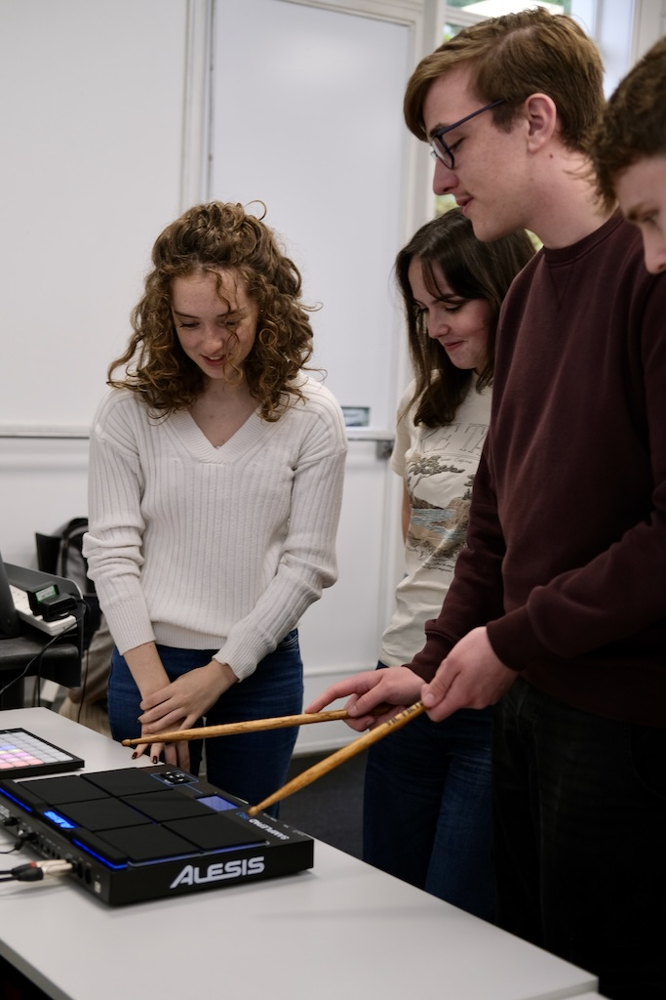
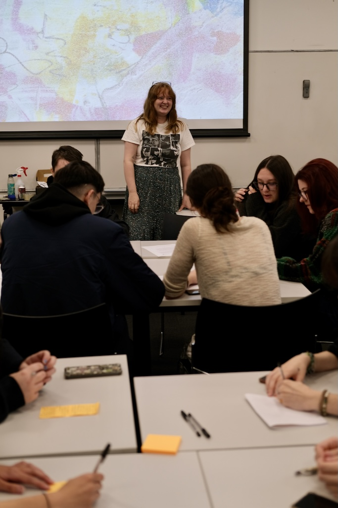

The Surprising Ways We All Think Differently: What We Learned from 'Jamming Out' Our Inner Voices

“I thought everyone thought like me – until I realised they don’t.”
This simple revelation echoed around the room at our recent workshop on voices of the mind, as participants discovered something both obvious and profound: we all think differently. Not just in what we think, but in the fundamental how of our mental experience.
When Thoughts Become Melody
Following our July workshop where participants visualised their inner experiences through art, this time we showcased an ambitious prototype: an interactive launchpad and drum pad that allows us to express thought patterns into sound. The idea was simple yet powerful – what if you could ‘perform’ your inner thought, turning the cacophony or silence of your mind into something artistic others could hear?
The response? More than thirty young people eagerly queued to bash drums, trigger soundscapes, and layer voice recordings into compositions that reflected their mental worlds. The drum pads proved irresistibly popular (there’s something deeply satisfying about externalising your thoughts through rhythm), though we quickly learned that multiple overlapping voices can create the very mental clutter some participants were trying to escape – a feedback we’re now using to refine the prototype.

The Real Discovery: We Don’t All Have an ‘Inner Voice’
But the technology was just the conversation starter. What emerged from the small group discussions that followed was far more fascinating.
One participant described their mind as the film Inside Out – multiple voices constantly competing for attention, an exhausting internal committee meeting that never adjourns. For them, thinking isn’t a process; it’s managing chaos.
Others revealed they have no inner voice at all. Their thoughts arrive as abstract impulses, intuitions that resist translation into words. “How do I describe something that has no language?” one asked. It’s perhaps closest to a ‘higher-level knowing’ – you simply understand without narrating it to yourself.
Then there were the visual thinkers – people whose thoughts manifest as schematic images, emotional shapes, and symbolic patterns rather than words or movies. “I see spiky patterns when I’m anxious” one participant explained, “and flowing curves when I’m calm.” Many of these visual thinkers gravitated toward visual arts, finding their medium matched their mental experience.
Participants on the ADHD spectrum described thoughts as “wild horses” – leaping between topics, resistant to corralling, exhausting to integrate into something coherent. This wasn’t just how they think during a workshop; it’s their daily reality.

Why This Matters: Beyond Academic Curiosity
Here’s what struck us most: almost everyone said they’d learned something new – despite having lived with their own thoughts their entire lives. Inner experience is perhaps our most intimate, constant companion, yet we rarely discuss it. We assume everyone’s mental landscape looks like ours.
They don’t.
This diversity isn’t just psychologically interesting; it has real implications. Dr Alice Ashcroft shared research on “hedging” – tentative language patterns (“maybe,” “perhaps,” “I think”) more commonly used by women. If our inner speech shapes how we speak outward, and social conditioning shapes our inner speech, we’re looking at a feedback loop that influences confidence, authority, and social dynamics.
Understanding how differently we think opens pathways to empathy. When someone takes longer to respond, are they dealing with competing inner voices? When someone makes quick decisions, are they following wordless intuition? When someone struggles to explain themselves, are they translating visual or abstract thoughts into a verbal world that doesn’t quite fit?
The Journey Continues
This workshop is part of our larger “Voices of the Mind” project – an ongoing collaboration between scientists and artists to make the invisible visible, the private shareable, the assumed questionable. We’re refining our interactive instrument based on your feedback, with plans to showcase it more widely (watch this space).
But more importantly, we’re building a community of curious minds interested in the science of consciousness, inner experience, and how art can illuminate what brain scans alone cannot.
Want to join the conversation? We’re building something new – a regular behind-the-scenes look at our research, upcoming workshops, and the fascinating science of how we think. »Sign up for our mailing list« to explore the hidden diversity of human consciousness with us.
Because once you realise everyone thinks differently, you can never quite see the world – or yourself – the same way again.
More Info: